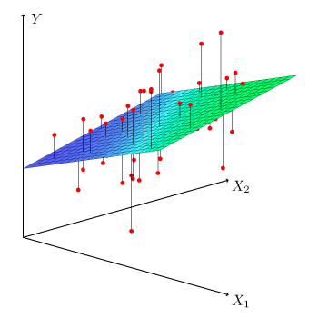

Introduction
Remember that descriptive statistics is a branch of statistics that allows to describe your data at hand.
Inferential statistics (with the popular hypothesis tests and confidence intervals) is another branch of statistics that allows to make inferences, that is, to draw conclusions about a population based on a sample.
The last branch of statistics is about modeling the relationship between two or more variables. The most common statistical tool to describe and evaluate the link between variables is linear regression.
There are two types of linear regression:
- Simple linear regression is a statistical approach that allows to assess the linear relationship between two quantitative variables. More precisely, it enables the relationship to be quantified and its significance to be evaluated.
- Multiple linear regression is a generalization of simple linear regression, in the sense that this approach makes it possible to evaluate the linear relationships between a response variable (quantitative) and several explanatory variables (quantitative or qualitative).
In the real world, multiple linear regression is used more frequently than simple linear regression. This is mostly the case because:
- Multiple linear regression allows to evaluate the relationship between two variables, while controlling for the effect (i.e., removing the effect) of other variables.
- With data collection becoming easier, more variables can be included and taken into account when analyzing data.
Multiple linear regression being such a powerful statistical tool, I would like to present it so that everyone understands it, and perhaps even use it when deemed necessary. However, I cannot afford to write about multiple linear regression without first presenting simple linear regression.
So after a reminder about the principle and the interpretations that can be drawn from a simple linear regression, I will illustrate how to perform multiple linear regression in R. I will also show, in the context of multiple linear regression, how to interpret the output and discuss about its conditions of application. I will then conclude the article by presenting more advanced topics directly linked to linear regression.
Simple linear regression: reminder
Simple linear regression is an asymmetric procedure in which:
- one of the variable is considered the response or the variable to be explained. It is also called dependent variable, and is represented on the \(y\)-axis
- the other variable is the explanatory or also called independent variable, and is represented on the \(x\)-axis
Simple linear regression allows to evaluate the existence of a linear relationship between two variables and to quantify this link. Note that linearity is a strong assumption in linear regression in the sense that it tests and quantifies whether the two variables are linearly dependent.
What makes linear regression a powerful statistical tool is that it allows to quantify by what quantity the response/dependent variable varies when the explanatory/independent variable increases by one unit.
This concept is key in linear regression and helps to answer the following questions:
- Is there a link between the amount spent in advertising and the sales during a certain period?
- Is the number of years of schooling valued, in financial terms, in the first job?
- Will an increase in tobacco taxes reduce its consumption?
- What is the most likely price of an apartment, depending on the area?
- Does a person’s reaction time to a stimulus depend on gender?
Simple linear regression can be seen as an extension to the analysis of variance (ANOVA) and the Student’s t-test. ANOVA and t-test allow to compare groups in terms of a quantitative variable—2 groups for t-test and 3 or more groups for ANOVA.
For these tests, the independent variable, that is, the grouping variable forming the different groups to compare must be a qualitative variable. Linear regression is an extension because in addition to be used to compare groups, it is also used with quantitative independent variables (which is not possible with t-test and ANOVA).
In this article, we are interested in assessing whether there is a linear relationship between the distance traveled with a gallon of fuel and the weight of cars. For this example, we use the mtcars dataset (preloaded in R).
The dataset includes fuel consumption and 10 aspects of automotive design and performance for 32 automobiles:
mpg Miles/(US) gallon (with a gallon \(\approx\) 3.79 liters)cyl Number of cylindersdisp Displacement (cu.in.)hp Gross horsepowerdrat Rear axle ratiowt Weight (1000 lbs, with 1000 lbs \(\approx\) 453.59 kg)qsec 1/4 mile time (with 1/4 mile \(\approx\) 402.34 meters)vs Engine (0 = V-shaped, 1 = straight)am Transmission (0 = automatic, 1 = manual)gear Number of forward gearscarb Number of carburetors
dat <- mtcars
library(ggplot2)
ggplot(dat, aes(x = wt, y = mpg)) +
geom_point() +
labs(
y = "Miles per gallon",
x = "Car's weight (1000 lbs)"
) +
theme_minimal()

The scatterplot above shows that there seems to be a negative relationship between the distance traveled with a gallon of fuel and the weight of a car. This makes sense, as the heavier the car, the more fuel it consumes and thus the fewer miles it can drive with a gallon.
This is already a good overview of the relationship between the two variables, but a simple linear regression with the miles per gallon as dependent variable and the car’s weight as independent variable goes further. It will tell us by how many miles the distance varies, on average, when the weight varies by one unit (1000 lbs in this case). This is possible thanks to the regression line.
Principle
The principle of simple linear regression is to find the line (i.e., determine its equation) which passes as close as possible to the observations, that is, the set of points formed by the pairs \((x_i, y_i)\).
In the first step, there are many potential lines. Three of them are plotted:

To find the line which passes as close as possible to all the points, we take the square of the vertical distance between each point and each potential line. Note that we take the square of the distances to make sure that a negative gap (i.e., a point below the line) is not compensated by a positive gap (i.e., a point above the line). The line which passes closest to the set of points is the one which minimizes the sum of these squared distances.
The resulting regression line is presented in blue in the following plot, and the dashed gray lines represent the vertical distance between the points and the fitted line. These vertical distances between each observed point and the fitted line determined by the least squares method are called the residuals of the linear regression model and denoted \(\epsilon\).

By definition, there is no other line with a smaller total distance between the points and the line. This method is called the least squares method, or OLS for ordinary least squares.
Equation
The regression model can be written in the form of the equation:
\[Y = \beta_0 + \beta_1 X + \epsilon\]
with:
- \(Y\) the dependent variable
- \(X\) the independent variable
- \(\beta_0\) the intercept (the mean value of \(Y\) when \(x = 0\)), also sometimes denoted \(\alpha\)
- \(\beta_1\) the slope (the expected increase in \(Y\) when \(X\) increases by one unit)
- \(\epsilon\) the residuals (the error term of mean 0 which describes the variations of \(Y\) not captured by the model, also referred as the noise)
When we determine the line which passes closest to all the points (we say that we fit a line to the observed data), we actually estimate the unknown parameters \(\beta_0\) and \(\beta_1\) based on the data at hand. Remember from your geometry classes, to draw a line you only need two parameters—the intercept and the slope.
These estimates (and thus the blue line shown in the previous scatterplot) can be computed by hand with the following formulas:
\[\begin{align}
\widehat\beta_1 &= \frac{\sum^n_{i = 1} (x_i - \bar{x})(y_i - \bar{y})}{\sum^n_{i = 1}(x_i - \bar{x})^2} \\
&= \frac{\left(\sum^n_{i = 1}x_iy_i\right) - n\bar{x}\bar{y}}{\sum^n_{i = 1}(x_i - \bar{x})^2}
\end{align}\]
and
\[\widehat\beta_0 = \bar{y} - \widehat\beta_1 \bar{x}\]
with \(\bar{x}\) and \(\bar{y}\) denoting the sample mean of \(x\) and \(y\), respectively.
(If you struggle to compute \(\widehat\beta_0\) and \(\widehat\beta_1\) by hand, see this Shiny app which helps you to easily find these estimates based on your data.)
Interpretations of coefficients \(\widehat\beta\)
The intercept \(\widehat\beta_0\) is the mean value of the dependent variable \(Y\) when the independent variable \(X\) takes the value 0. Its estimation has no interest in evaluating whether there is a linear relationship between two variables. It has, however, an interest if you want to know what the mean value of \(Y\) could be when \(x = 0\).
The slope \(\widehat\beta_1\), on the other hand, corresponds to the expected variation of \(Y\) when \(X\) varies by one unit. It tells us two important informations:
- The sign of the slope indicates the direction of the line—a positive slope (\(\widehat\beta_1 > 0\)) indicates that there is a positive relationship between the two variables of interest (they vary in the same direction), whereas a negative slope (\(\widehat\beta_1 < 0\)) means that there is a negative relationship between the two variables (they vary in opposite directions).
- The value of the slope provides information on the speed of evolution of the variable \(Y\) as a function of the variable \(X\). The larger the slope in absolute value, the larger the expected variation of \(Y\) for each unit of \(X\). Note, however, that a large value does not necessarily mean that the relationship is statistically significant (more on that in the section about significance of the relationship).
This is similar to the correlation coefficient, which gives information about the direction and the strength of the relationship between two variables.
To perform a linear regression in R, we use the lm() function (which stands for linear model). The function requires to set the dependent variable first then the independent variable, separated by a tilde (~).
Applied to our example of weight and car’s consumption, we have:
model <- lm(mpg ~ wt, data = dat)
The summary() function gives the results of the model:
summary(model)
##
## Call:
## lm(formula = mpg ~ wt, data = dat)
##
## Residuals:
## Min 1Q Median 3Q Max
## -4.5432 -2.3647 -0.1252 1.4096 6.8727
##
## Coefficients:
## Estimate Std. Error t value Pr(>|t|)
## (Intercept) 37.2851 1.8776 19.858 < 2e-16 ***
## wt -5.3445 0.5591 -9.559 1.29e-10 ***
## ---
## Signif. codes: 0 '***' 0.001 '**' 0.01 '*' 0.05 '.' 0.1 ' ' 1
##
## Residual standard error: 3.046 on 30 degrees of freedom
## Multiple R-squared: 0.7528, Adjusted R-squared: 0.7446
## F-statistic: 91.38 on 1 and 30 DF, p-value: 1.294e-10
In practice, we usually check the conditions of application before interpreting the coefficients (because if they are not respected, results may be biased).
In this article, however, I present the interpretations before testing the conditions because the point is to show how to interpret the results, and less about finding a valid model.
The results can be summarized as follows (see the column Estimate in the table Coefficients):
- The intercept \(\widehat\beta_0 =\) 37.29 indicates that, for a hypothetical car weighting 0 lbs, we can expect, on average, a consumption of 37.29 miles/gallon. This interpretation is shown for illustrative purposes, but as a car weighting 0 lbs is impossible, the interpretation has no meaning. In practice, we would therefore refrain from interpreting the intercept in this case. See another interpretation of the intercept when the independent variable is centered around its mean in this section.
- The slope \(\widehat\beta_1 =\) -5.34 indicates that:
- There is a negative relationship between the weight and the distance a car can drive with a gallon (this was expected given the negative trend of the points in the scatterplot shown previously).
- But more importantly, a slope of -5.34 means that, for an increase of one unit in the weight (that is, an increase of 1000 lbs), the number of miles per gallon decreases, on average, by 5.34 units. In other words, for an increase of 1000 lbs, the number of miles/gallon decreases, on average, by 5.34.
Another interpretation of the intercept
Another useful interpretation of the intercept is when the independent variable is centered around its mean. In this case, the intercept is interpreted as the mean value of \(Y\) for individuals who have a value of \(X\) equal to the mean of \(X\).
Let’s see it in practice.
We first center the wt variable around the mean then rerun a simple linear model with this new variable:
dat_centered <- dat
dat_centered$wt_centered <- dat$wt - mean(dat$wt)
mod_centered <- lm(mpg ~ wt_centered,
data = dat_centered
)
summary(mod_centered)
##
## Call:
## lm(formula = mpg ~ wt_centered, data = dat_centered)
##
## Residuals:
## Min 1Q Median 3Q Max
## -4.5432 -2.3647 -0.1252 1.4096 6.8727
##
## Coefficients:
## Estimate Std. Error t value Pr(>|t|)
## (Intercept) 20.0906 0.5384 37.313 < 2e-16 ***
## wt_centered -5.3445 0.5591 -9.559 1.29e-10 ***
## ---
## Signif. codes: 0 '***' 0.001 '**' 0.01 '*' 0.05 '.' 0.1 ' ' 1
##
## Residual standard error: 3.046 on 30 degrees of freedom
## Multiple R-squared: 0.7528, Adjusted R-squared: 0.7446
## F-statistic: 91.38 on 1 and 30 DF, p-value: 1.294e-10
Based on the results, we see that:
- The slope has not changed, the interpretation is the same than without the centering (which makes sense since the regression line has simply been shifted to the right or left).
- More importantly, the intercept is now \(\widehat\beta_0 =\) 20.09, so we can expect, on average, a consumption of 20.09 miles/gallon for a car with an average weight (the mean of weight is 3.22 so 3220 lbs).
This centering is particularly interesting:
- when the continuous independent variable has no meaningful value of 0 (which is the case here as a car with a weight of 0 lbs is not meaningful), or
- when interpreting the intercept is important.
Note that centering does not have to be done around the mean only. The independent variable can also be centered at some value that is actually in the range of the data. The exact value you center on does not matter as long it’s meaningful and within the range of data (it is not recommended to center it on a value that is not in the range of the data because we are not sure about the type of relationship between the two variables outside that range).
For our example, we may find that choosing the lowest value or the highest value of weight is the best option. So it’s up to us to decide the weight at which it’s most meaningful to interpret the intercept.
Significance of the relationship
As mentioned earlier, the value of the slope does not, by itself, make it possible to assess the significance of the linear relationship.
In other words, a slope different from 0 does not necessarily mean it is significantly different from 0, so it does not mean that there is a significant relationship between the two variables in the population. There could be a slope of 10 that is not significant, and a slope of 2 that is significant.
Significance of the relationship also depends on the variability of the slope, which is measured by its standard error and generally noted \(se(\widehat\beta_1)\).
Without going too much into details, to assess the significance of the linear relationship, we divide the slope by its standard error. This ratio is the test statistic and follows a Student distribution with \(n - 2\) degrees of freedom:
\[T_{n - 2} = \frac{\widehat\beta_1}{se(\widehat\beta_1)}\]
For a bilateral test, the null and alternative hypotheses are:
- \(H_0 : \beta_1 = 0\) (there is no (linear) relationship between the two variables)
- \(H_1 : \beta_1 \ne 0\) (there is a (linear) relationship between the two variables)
Roughly speaking, if this ratio is greater than 2 in absolute value then the slope is significantly different from 0, and therefore the relationship between the two variables is significant (and in that case it is positive or negative depending on the sign of the estimate \(\widehat\beta_1\)).
The standard error and the test statistic are shown in the column Std. Error and t value in the table Coefficients.
Fortunately, R gives a more precise and easier way to assess to the significance of the relationship. The information is provided in the column Pr(>|t|) of the Coefficients table. This is the p-value of the test. As for any statistical test, if the p-value is greater than or equal to the significance level (usually \(\alpha = 0.05\)), we do not reject the null hypothesis, and if the p-value is lower than the significance level, we reject the null hypothesis.
If we do not reject the null hypothesis, we do not reject the hypothesis of no relationship between the two variables (because we do not reject the hypothesis of a slope of 0). On the contrary, if we reject the null hypothesis of no relationship, we can conclude that there is a significant linear relationship between the two variables.
In our example, the p-value = 1.29e-10 < 0.05 so we reject the null hypothesis at the significance level \(\alpha = 5\%\). We therefore conclude that there is a significant relationship between a car’s weight and its fuel consumption.
Tip: In order to make sure I interpret only parameters that are significant, I tend to first check the significance of the parameters thanks to the p-values, and then interpret the estimates accordingly. For completeness, note that the test is also performed on the intercept. The p-value being smaller than 0.05, we also conclude that the intercept is significantly different from 0.
Correlation does not imply causation
Be careful that a significant relationship between two variables does not necessarily mean that there is an influence of one variable on the other or that there is a causal effect between these two variables!
A significant relationship between \(X\) and \(Y\) can appear in several cases:
- \(X\) causes \(Y\)
- \(Y\) causes \(X\)
- a third variable cause \(X\) and \(Y\)
- a combination of these three reasons
A statistical model alone cannot establish a causal link between two variables. Demonstrating causality between two variables is more complex and requires, among others, a specific experimental design, the repeatability of the results over time, as well as various samples.
This is the reason you will often read “Correlation does not imply causation” and linear regression follows the same principle.
Conditions of application
Unfortunately, linear regression cannot be used in all situations.
In addition to the requirement that the dependent variable must be a continuous quantitative variables, simple linear regression requires that the data satisfy the following conditions:
- Linearity: The relationship between the two variables should be linear (at least roughly). For this reason it is always necessary to represent graphically the data with a scatterplot before performing a simple linear regression.

- Independence: Observations must be independent. It is the sampling plan and the experimental design that usually provide information on this condition. If the data come from different individuals or experimental units, they are usually independent. On the other hand, if the same individuals are measured at different periods, the data are probably not independent.
- Normality of the residuals: For large sample sizes, confidence intervals and tests on the coefficients are (approximately) valid whether the error follows a normal distribution or not (a consequence of the central limit theorem, see more in Ernst and Albers (2017) and Lumley et al. (2002))! For small sample sizes, residuals should follow a normal distribution. This condition can be tested visually (via a QQ-plot and/or a histogram), or more formally (via the Shapiro-Wilk test for instance).
- Homoscedasticity of the residuals: The variance of the errors should be constant. There is a lack of homoscedasticity when the dispersion of the residuals increases with the predicted values (fitted values). This condition can be tested visually (by plotting the standardized residuals vs. the fitted values) or more formally (via the Breusch-Pagan test).
- No influential points: If the data contain outliers, it is essential to identify them so that they do not, on their own, influence the results of the regression. Note that an outlier is not an issue per se if the point is in the alignment of the regression line for example because it does not influence the regression line. It becomes a problem in the context of linear regression if it influences in a substantial manner the estimates (and in particular the slope of the regression line). This can be tackled by identifying outliers (via the Cook’s distance or the leverage index for instance), and comparing the results with and without the potential outliers. Do the results remain the same with the two approaches? If yes, outliers are not really an issue in this case. If results are much different, you can use the Theil-Sen estimator, robust regression or quantile regression which are all more robust to outliers.
Tip: I remember the first 4 conditions thanks to the acronym “LINE”, for Linearity, Independence, Normality and Equality of variance.
If any of the condition is not met, the tests and the conclusions could be erroneous so it is best to avoid using and interpreting the model. If this is the case, sometimes the conditions can be met by transforming the data (e.g., logarithmic transformation, square or square root, Box-Cox transformation, etc.) or by adding a quadratic term to the model.
If it does not help, it could be worth thinking about removing some variables or adding other variables, or even considering other types of models such as non-linear models.
Keep in mind that in practice, conditions of application should be verified before drawing any conclusion based on the model. I refrain here from testing the conditions on our data because it will be covered in details in the context of multiple linear regression (see this section).
Visualizations
If you are a frequent reader of the blog, you may know that I like to draw (simple but efficient) visualizations to illustrate my statistical analyses. Linear regression is not an exception.
There are numerous ways to visualize the relationship between the two variables of interest, but the easiest one I found so far is via the visreg() function from the package of the same name:
library(visreg)
visreg(model)

I like this approach for its simplicity—only a single line of code.
However, other elements could be displayed on the regression plot (for example the regression equation and the \(R^2\)). This can easily be done with the stat_regline_equation() and stat_cor() functions from the {ggpubr} package:
# load necessary libraries
library(ggpubr)
# create plot with regression line, regression equation and R^2
ggplot(dat, aes(x = wt, y = mpg)) +
geom_smooth(method = "lm") +
geom_point() +
stat_regline_equation(label.x = 3, label.y = 32) + # for regression equation
stat_cor(aes(label = after_stat(rr.label)), label.x = 3, label.y = 30) + # for R^2
theme_minimal()

Multiple linear regression
Now that you understand the principle behind simple linear regression and you know how to interpret the results, it is time to discuss about multiple linear regression.
We also start with the underlying principle of multiple linear regression, then show how to interpret the results, how to test the conditions of application and finish with more advanced topics.
Principle
Multiple linear regression is a generalization of simple linear regression, in the sense that this approach makes it possible to relate one variable with several variables through a linear function in its parameters.
Multiple linear regression is used to assess the relationship between two variables while taking into account the effect of other variables. By taking into account the effect of other variables, we cancel out the effect of these other variables in order to isolate and measure the relationship between the two variables of interest. This point is the main difference with simple linear regression.
To illustrate how to perform a multiple linear regression in R, we use the same dataset than the one used for simple linear regression (mtcars). Below a short preview:
head(dat)
## mpg cyl disp hp drat wt qsec vs am gear carb
## Mazda RX4 21.0 6 160 110 3.90 2.620 16.46 0 1 4 4
## Mazda RX4 Wag 21.0 6 160 110 3.90 2.875 17.02 0 1 4 4
## Datsun 710 22.8 4 108 93 3.85 2.320 18.61 1 1 4 1
## Hornet 4 Drive 21.4 6 258 110 3.08 3.215 19.44 1 0 3 1
## Hornet Sportabout 18.7 8 360 175 3.15 3.440 17.02 0 0 3 2
## Valiant 18.1 6 225 105 2.76 3.460 20.22 1 0 3 1
We have seen that there is a significant and negative linear relationship between the distance a car can drive with a gallon and its weight (\(\widehat\beta_1 =\) -5.34, \(p\)-value < 0.001).
However, one may wonder whether there are not in reality other factors that could explain a car’s fuel consumption.
To explore this, we can visualize the relationship between a car’s fuel consumption (mpg) together with its weight (wt), horsepower (hp) and displacement (disp) (engine displacement is the combined swept (or displaced) volume of air resulting from the up-and-down movement of pistons in the cylinders, usually the higher the more powerful the car):
ggplot(dat) +
aes(x = wt, y = mpg, colour = hp, size = disp) +
geom_point() +
scale_color_gradient() +
labs(
y = "Miles per gallon",
x = "Weight (1000 lbs)",
color = "Horsepower",
size = "Displacement"
) +
theme_minimal()

It seems that, in addition to the negative relationship between miles per gallon and weight, there is also:
- a negative relationship between miles/gallon and horsepower (lighter points, indicating more horsepower, tend to be more present in low levels of miles per gallon)
- a negative relationship between miles/gallon and displacement (bigger points, indicating larger values of displacement, tend to be more present in low levels of miles per gallon).
Therefore, we would like to evaluate the relation between the fuel consumption and the weight, but this time by adding information on the horsepower and displacement. By adding this additional information, we are able to capture only the direct relationship between miles/gallon and weight (the indirect effect due to horsepower and displacement is canceled out).
This is the whole point of multiple linear regression! In fact, in multiple linear regression, the estimated relationship between the dependent variable and an explanatory variable is an adjusted relationship, that is, free of the linear effects of the other explanatory variables.
Let’s illustrate this notion of adjustment by adding both horsepower and displacement in our linear regression model:
model2 <- lm(mpg ~ wt + hp + disp,
data = dat
)
summary(model2)
##
## Call:
## lm(formula = mpg ~ wt + hp + disp, data = dat)
##
## Residuals:
## Min 1Q Median 3Q Max
## -3.891 -1.640 -0.172 1.061 5.861
##
## Coefficients:
## Estimate Std. Error t value Pr(>|t|)
## (Intercept) 37.105505 2.110815 17.579 < 2e-16 ***
## wt -3.800891 1.066191 -3.565 0.00133 **
## hp -0.031157 0.011436 -2.724 0.01097 *
## disp -0.000937 0.010350 -0.091 0.92851
## ---
## Signif. codes: 0 '***' 0.001 '**' 0.01 '*' 0.05 '.' 0.1 ' ' 1
##
## Residual standard error: 2.639 on 28 degrees of freedom
## Multiple R-squared: 0.8268, Adjusted R-squared: 0.8083
## F-statistic: 44.57 on 3 and 28 DF, p-value: 8.65e-11
We can see that now, the relationship between miles/gallon and weight is weaker in terms of slope (\(\widehat\beta_1 =\) -3.8 now, against \(\widehat\beta_1 =\) -5.34 when only the weight was considered).
The effect of weight on fuel consumption was adjusted according to the effect of horsepower and displacement. This is the remaining effect between miles/gallon and weight after the effects of horsepower and displacement have been taken into account. More detailed interpretations in this section.
Equation
Multiple linear regression models are defined by the equation
\[Y = \beta_0 + \beta_1 X_1 + \beta_2 X_2 + \dots + \beta_p X_p + \epsilon\]
It is similar than the equation of simple linear regression, except that there is more than one independent variables (\(X_1, X_2, \dots, X_p\)).
Estimation of the parameters \(\beta_0, \dots, \beta_p\) by the method of least squares is based on the same principle as that of simple linear regression, but applied to \(p\) dimensions. It is thus no longer a question of finding the best line (the one which passes closest to the pairs of points (\(y_i, x_i\))), but finding the \(p\)-dimensional plane which passes closest to the coordinate points (\(y_i, x_{i1}, \dots, x_{ip}\)).
This is done by minimizing the sum of the squares of the deviations of the points on the plane:

Source: Thaddeussegura
Interpretations of coefficients \(\widehat\beta\)
The least squares method results in an adjusted estimate of the coefficients. The term adjusted means after taking into account the linear effects of the other independent variables on the dependent variable, but also on the predictor variable.
In other words, the coefficient \(\beta_1\) corresponds to the slope of the relationship between \(Y\) and \(X_1\) when the linear effects of the other explanatory variables (\(X_2, \dots, X_p\)) have been removed, both at the level of the dependent variable \(Y\) but also at the level of \(X_1\).
Applied to our model with weight, horsepower and displacement as independent variables, we have:
summary(model2)
##
## Call:
## lm(formula = mpg ~ wt + hp + disp, data = dat)
##
## Residuals:
## Min 1Q Median 3Q Max
## -3.891 -1.640 -0.172 1.061 5.861
##
## Coefficients:
## Estimate Std. Error t value Pr(>|t|)
## (Intercept) 37.105505 2.110815 17.579 < 2e-16 ***
## wt -3.800891 1.066191 -3.565 0.00133 **
## hp -0.031157 0.011436 -2.724 0.01097 *
## disp -0.000937 0.010350 -0.091 0.92851
## ---
## Signif. codes: 0 '***' 0.001 '**' 0.01 '*' 0.05 '.' 0.1 ' ' 1
##
## Residual standard error: 2.639 on 28 degrees of freedom
## Multiple R-squared: 0.8268, Adjusted R-squared: 0.8083
## F-statistic: 44.57 on 3 and 28 DF, p-value: 8.65e-11
The table Coefficients gives the estimate for each parameter (column Estimate), together with the \(p\)-value of the nullity of the parameter (column Pr(>|t|)).
The hypotheses are the same as for simple linear regression, that is:
- \(H_0 : \beta_j = 0\)
- \(H_1 : \beta_j \ne 0\)
The test of \(\beta_j = 0\) is equivalent to testing the hypothesis: is the dependent variable associated with the independent variable studied, all other things being equal, that is to say, at constant level of the other independent variables.
In other words:
- the test of \(\beta_1 = 0\) corresponds to testing the hypothesis: is fuel consumption associated with a car’s weight, at a constant level of horsepower and displacement
- the test of \(\beta_2 = 0\) corresponds to testing the hypothesis: is fuel consumption associated with horsepower, at a constant level of weight and displacement
- the test of \(\beta_3 = 0\) corresponds to testing the hypothesis: is fuel consumption associated with displacement, at a constant level of weight and displacement
- (for the sake of completeness: the test of \(\beta_0 = 0\) corresponds to testing the hypothesis: is miles/gallon different from 0 when weight, horsepower and displacement are equal to 0)
In practice, we usually check the conditions of application before interpreting the coefficients (because if they are not respected, results may be biased). In this article, however, I present the interpretations before testing the conditions because the point is to show how to interpret the results, and less about finding a valid model.
Based on the output of our model, we conclude that:
- There is a significant and negative relationship between miles/gallon and weight, all else being equal. So for an increase of one unit in the weight (that is, an increase of 1000 lbs), the number of miles/gallon decreases, on average, by 3.8, for a constant level of horsepower and displacement (\(p\)-value = 0.001).
- There is a significant and negative relationship between miles/gallon and horsepower, all else being equal. So for an increase of one unit of horsepower, the distance traveled with a gallon decreases, on average, by 0.03 mile, for a constant level of weight and displacement (\(p\)-value = 0.011).
- We do not reject the hypothesis of no relationship between miles/gallon and displacement when weight and horsepower stay constant (because \(p\)-value = 0.929 > 0.05).
- (For completeness but it should be interpreted only when it makes sense: for a weight, horsepower and displacement = 0, we can expect that a car has, on average, a fuel consumption of 37.11 miles/gallon (\(p\)-value < 0.001). See a more useful interpretation of the intercept when the independent variables are centered in this section.)
This is how to interpret quantitative independent variables. Interpreting qualitative independent variables is slightly different in the sense that it quantifies the effect of a level in comparison with the reference level, sill all else being equal.
So it compares the different groups (formed by the different levels of the categorical variable) in terms of the dependent variable (this is why linear regression can be seen as an extension to the t-test and ANOVA).
For the illustration, we model the fuel consumption (mpg) on the weight (wt) and the shape of the engine (vs). The variable vs has two levels: V-shaped (the reference level) and straight engine.
## Recoding dat$vs
library(forcats)
dat$vs <- as.character(dat$vs)
dat$vs <- fct_recode(dat$vs,
"V-shaped" = "0",
"Straight" = "1"
)
model3 <- lm(mpg ~ wt + vs,
data = dat
)
summary(model3)
##
## Call:
## lm(formula = mpg ~ wt + vs, data = dat)
##
## Residuals:
## Min 1Q Median 3Q Max
## -3.7071 -2.4415 -0.3129 1.4319 6.0156
##
## Coefficients:
## Estimate Std. Error t value Pr(>|t|)
## (Intercept) 33.0042 2.3554 14.012 1.92e-14 ***
## wt -4.4428 0.6134 -7.243 5.63e-08 ***
## vsStraight 3.1544 1.1907 2.649 0.0129 *
## ---
## Signif. codes: 0 '***' 0.001 '**' 0.01 '*' 0.05 '.' 0.1 ' ' 1
##
## Residual standard error: 2.78 on 29 degrees of freedom
## Multiple R-squared: 0.801, Adjusted R-squared: 0.7873
## F-statistic: 58.36 on 2 and 29 DF, p-value: 6.818e-11
Based on the output of our model, we conclude that:
- For a V-shaped engine and for an increase of one unit in the weight (that is, an increase of 1000 lbs), the number of miles/gallon decreases, on average, by 4.44 (\(p\)-value < 0.001).
- The distance traveled with a gallon of fuel increases by, on average, 3.15 miles when the engine is straight compared to a V-shaped engine, for a constant weight (\(p\)-value = 0.013).
- (For completeness but it should be interpreted only when it makes sense: for a weight = 0 and a V-shaped engine, we can expect that the car has, on average, a fuel consumption of 33 miles/gallon (\(p\)-value < 0.001). See a more useful interpretation of the intercept when the independent variables are centered in this section.)
Conditions of application
As for simple linear regression, multiple linear regression requires some conditions of application for the model to be usable and the results to be interpretable. Conditions for simple linear regression also apply to multiple linear regression, that is:
- Linearity of the relationships between the dependent and independent variables
- Independence of the observations
- Normality of the residuals
- Homoscedasticity of the residuals
- No influential points (outliers)
But there is one more condition for multiple linear regression:
- No multicollinearity: Multicollinearity arises when there is a strong linear correlation between the independent variables, conditional on the other variables in the model. It is important to check it because it may lead to an imprecision or an instability of the estimated parameters when a variable changes. It can be assessed by studying the correlation between each pair of independent variables, or even better, by computing the variance inflation factor (VIF). The VIF measures how much the variance of an estimated regression coefficient increases, relative to a situation in which the explanatory variables are strictly independent. A high value of VIF is a sign of multicollinearity (the threshold is generally admitted at 5 or 10 depending on the domain). The easiest way to reduce the VIF is to remove some correlated independent variables, or eventually to standardize the data.
You will often see that these conditions are verified by running plot(model, which = 1:6) and it is totally correct. However, I recently discovered the check_model() function from the {performance} package which tests these conditions all at the same time (and let’s be honest, in a more elegant way).
Applied on our model2 with miles/gallon as dependent variable, and weight, horsepower and displacement as independent variables, we have:
# install.packages("performance")
# install.packages("see")
library(performance)
check_model(model2)

In addition to testing all conditions at the same time, it also gives insight on how to interpret the different diagnostic plots and what you should expect (see in the subtitles of each plot).
Based on these diagnostic plots, we see that:
- Homogeneity of variance (middle left plot) is respected
- Multicollinearity (bottom left plot) is not an issue (I tend to use the threshold of 10 for VIF, and all of them are below 10)
- There is no influential points (middle right plot)
- Normality of the residuals (bottom right plot) is also not perfect due to 3 points deviating from the reference line but it still seems acceptable to me. In any case, the number of observations is large enough given the number of parameters and given the small deviation from normality so tests on the coefficients are (approximately) valid whether the error follows a normal distribution or not
- Linearity (top right plot) is not perfect so let’s check each independent variable separately:
# weight
ggplot(dat, aes(x = wt, y = mpg)) +
geom_point() +
theme_minimal()

# horsepower
ggplot(dat, aes(x = hp, y = mpg)) +
geom_point() +
theme_minimal()

# displacement
ggplot(dat, aes(x = disp, y = mpg)) +
geom_point() +
theme_minimal()

It seems that the relationship between miles/gallon and horsepower is not linear, which could be the main component of the slight linearity defect of the model.
To improve linearity, the variable could be removed, a transformation could be applied (logarithmic and/or squared for instance) or a quadratic term could be added to the model. If this does not fix the issue of linearity, other types of models could be considered.
If you want to read more about these conditions of applications and how to deal with them, here is a very complete chapter on diagnostics for linear models written by Prof. Dustin Fife.
For the sake of easiness and for illustrative purposes, we assume linearity for the rest of the article.
When the conditions of application are met, we usually say that the model is valid. But not all valid models are good models. The next section deals with model selection.
How to choose a good linear model?
A model which satisfies the conditions of application is the minimum requirement, but you will likely find several models that meet this criteria. So one may wonder how to choose between different models that are all valid?
The three most common tools to select a good linear model are according to:
- the \(p\)-value associated to the model,
- the coefficient of determination \(R^2\) and
- the Akaike Information Criterion
The approaches are detailed in the next sections. Note that the first two are applicable to simple and multiple linear regression, whereas the third is only applicable to multiple linear regression.
\(P\)-value associated to the model
Before interpreting the estimates of a model, it is a good practice to first check the \(p\)-value associated to the model. This \(p\)-value indicates if the model is better than a model with only the intercept.
The hypotheses of the test (called F-test) are:
- \(H_0: \beta_1 = \beta_2 = \dots = \beta_p = 0\)
- \(H_1:\) at least one coefficient \(\beta \ne 0\)
This \(p\)-value can be found at the bottom of the summary() output:
summary(model2)
##
## Call:
## lm(formula = mpg ~ wt + hp + disp, data = dat)
##
## Residuals:
## Min 1Q Median 3Q Max
## -3.891 -1.640 -0.172 1.061 5.861
##
## Coefficients:
## Estimate Std. Error t value Pr(>|t|)
## (Intercept) 37.105505 2.110815 17.579 < 2e-16 ***
## wt -3.800891 1.066191 -3.565 0.00133 **
## hp -0.031157 0.011436 -2.724 0.01097 *
## disp -0.000937 0.010350 -0.091 0.92851
## ---
## Signif. codes: 0 '***' 0.001 '**' 0.01 '*' 0.05 '.' 0.1 ' ' 1
##
## Residual standard error: 2.639 on 28 degrees of freedom
## Multiple R-squared: 0.8268, Adjusted R-squared: 0.8083
## F-statistic: 44.57 on 3 and 28 DF, p-value: 8.65e-11
The \(p\)-value = 8.65e-11. The null hypothesis is rejected, so we conclude that our model is better than a model with only the intercept because at least one coefficient \(\beta\) is significantly different from 0.
If this \(p\)-value > 0.05 for one of your model, it means that none of the variables you selected help in explaining the dependent variable. In other words, you should completely forget about this model because it cannot do better than simply taking the mean of the dependent variable.
Coefficient of determination \(R^2\)
The coefficient of determination, \(R^2\), is a measure of the goodness of fit of the model. It measures the proportion of the total variability that is explained by the model, or how well the model fits the data.
\(R^2\) varies between 0 and 1:
- \(R^2 = 0\): the model explains nothing
- \(R^2 = 1\): the model explains everything
- \(0 < R^2 < 1\): the model explains part of the variability
- the higher the \(R^2\), the better the model explains the dependent variable. As a rule of thumb, a \(R^2 > 0.7\) indicates a good fit of the model
Note that in a simple linear regression model, the coefficient of determination is equal to the square of the Pearson correlation coefficient:
\[R^2 = corr(X, Y)^2\]
Applied on our model2 with miles/gallon as dependent variable, and weight, horsepower and displacement as independent variables, we have:
summary(model2)
##
## Call:
## lm(formula = mpg ~ wt + hp + disp, data = dat)
##
## Residuals:
## Min 1Q Median 3Q Max
## -3.891 -1.640 -0.172 1.061 5.861
##
## Coefficients:
## Estimate Std. Error t value Pr(>|t|)
## (Intercept) 37.105505 2.110815 17.579 < 2e-16 ***
## wt -3.800891 1.066191 -3.565 0.00133 **
## hp -0.031157 0.011436 -2.724 0.01097 *
## disp -0.000937 0.010350 -0.091 0.92851
## ---
## Signif. codes: 0 '***' 0.001 '**' 0.01 '*' 0.05 '.' 0.1 ' ' 1
##
## Residual standard error: 2.639 on 28 degrees of freedom
## Multiple R-squared: 0.8268, Adjusted R-squared: 0.8083
## F-statistic: 44.57 on 3 and 28 DF, p-value: 8.65e-11
\(R^2\) is displayed at the bottom of the summary() output or can be extracted with summary(model2)$r.squared.
\(R^2\) for this model is 0.8268, which means that 82.68% of the variability of the distance traveled with a gallon is explained by the weight, horsepower and displacement of the car. The relatively high \(R^2\) means that the weight, horsepower and displacement of a car are good characteristics to explain the distance it can drive with a gallon of fuel.
Note that if you want to compare models with different number of independent variables, it is best to refer to the adjusted \(R^2\) (= 0.8083 here).
Indeed, adding variables to the model cannot make the \(R^2\) to decrease, even if the variables are not related to the dependent variables (so the \(R^2\) will artificially increase when adding variables to the model, or at least stay constant). Therefore, the adjusted \(R^2\) takes into account the complexity of the model (the number of variables) by penalizing for additional variables, so it is a compromise between goodness of fit and parsimony.
Parsimony
A parsimonious model (few variables) is usually preferred over a complex model (many variables). There are two ways to obtain a parsimonious model from a model with many independent variables:
- We can iteratively remove the independent variable least significantly related to the dependent variable (i.e., the one with the highest \(p\)-value in an analysis of variance table) until all of them are significantly associated to the response variable, or
- We can select the model based on the Akaike Information Criterion (AIC). AIC expresses a desire to fit the model with the smallest number of coefficients possible and allows to compare models. According to this criterion, the best model is the one with the lowest AIC. This criterion is based on a compromise between the quality of the fit and its complexity. We usually start from a global model with many independent variables, and the procedure (referred as stepwise algorithm) automatically compares models then selects the best one according to the AIC.
We show how to do the second option in R. For the illustration, we start with a model with all variables in the dataset as independent variables (do not forget to transform the factor variables first):
## vs has already been transformed into factor
## so only am is transformed here
## Recoding dat$vs
library(forcats)
dat$am <- as.character(dat$am)
dat$am <- fct_recode(dat$am,
"Automatic" = "0",
"Manual" = "1"
)
model4 <- lm(mpg ~ .,
data = dat
)
model4 <- step(model4, trace = FALSE)
(Tip: The formula mpg ~ . is a shortcut to consider all variables present in the dataset as independent variables, except the one that has been specified as the dependent variable (mpg here)).
The model that has been selected according to this criterion is the following:
summary(model4)
##
## Call:
## lm(formula = mpg ~ wt + qsec + am, data = dat)
##
## Residuals:
## Min 1Q Median 3Q Max
## -3.4811 -1.5555 -0.7257 1.4110 4.6610
##
## Coefficients:
## Estimate Std. Error t value Pr(>|t|)
## (Intercept) 9.6178 6.9596 1.382 0.177915
## wt -3.9165 0.7112 -5.507 6.95e-06 ***
## qsec 1.2259 0.2887 4.247 0.000216 ***
## amManual 2.9358 1.4109 2.081 0.046716 *
## ---
## Signif. codes: 0 '***' 0.001 '**' 0.01 '*' 0.05 '.' 0.1 ' ' 1
##
## Residual standard error: 2.459 on 28 degrees of freedom
## Multiple R-squared: 0.8497, Adjusted R-squared: 0.8336
## F-statistic: 52.75 on 3 and 28 DF, p-value: 1.21e-11
Be careful when using an automatic procedure because, even though it is the best model that is selected, it is based:
- on a single criterion (AIC in this case), but more importantly;
- it is based on some set of mathematical rules, which means that industry knowledge or human expertise is not taken into consideration.
I believe that this kind of automatic procedure for model’s selection is a good starting point, but I also believe that the final model should always be checked and tested against other models to make sure it makes sense in practice (apply common sense).
Last but not least, do not forget to also verify the conditions of application because the stepwise procedure does not guarantee that they are respected.
Visualizations
There are many ways to visualize results of a linear regression. The easiest ones I am aware of are:
visreg() illustrates the relationships between the dependent and independent variables in different plots (one for each independent variable unless you specify which relationship you want to illustrate):
library(visreg)
visreg(model4)


ggcoefstats() illustrates the results in one single plot, with many statistical details:
library(ggstatsplot)
ggcoefstats(model4)

In this plot:
- when the solid line does not cross the vertical dashed line, the estimates is significantly different from 0 at the 5% significance level (i.e., \(p\)-value < 0.05)
- furthermore, a point to the right (left) of the vertical dashed line means that there is a positive (negative) relationship between the two variables
- the more extreme the point, the stronger the relationship
plot_summs() which also illustrates the results but in a more concise way:
library(jtools)
library(ggstance)
plot_summs(model4,
omit.coefs = NULL
)

The advantage of this approach is that it is possible to compare coefficients of multiple models simultaneously (particularly interesting when the models are nested):
model4bis <- lm(mpg ~ wt + qsec + am + hp,
data = dat
)
plot_summs(model4,
model4bis,
omit.coefs = NULL
)

To go further
Below some more advanced topics related to linear regression. Feel free to comment at the end of the article if you believe I missed an important one.
Print model’s parameters
Thanks to the model_parameters() function from the {parameters} package, you can print a summary of the model in a nicely formatted way to make the output more readable:
library(parameters)
model_parameters(model4, summary = TRUE)
## Parameter | Coefficient | SE | 95% CI | t(28) | p
## ------------------------------------------------------------------
## (Intercept) | 9.62 | 6.96 | [-4.64, 23.87] | 1.38 | 0.178
## wt | -3.92 | 0.71 | [-5.37, -2.46] | -5.51 | < .001
## qsec | 1.23 | 0.29 | [ 0.63, 1.82] | 4.25 | < .001
## am [Manual] | 2.94 | 1.41 | [ 0.05, 5.83] | 2.08 | 0.047
##
## Model: mpg ~ wt + qsec + am (32 Observations)
## Residual standard deviation: 2.459 (df = 28)
## R2: 0.850; adjusted R2: 0.834
And if you are using R Markdown, you can use the print_html() function to get a compact and yet comprehensive summary table in your HTML file:
library(gt)
print_html(model_parameters(model4, summary = TRUE))
| Parameter |
Coefficient |
SE |
95% CI |
t(28) |
p |
| (Intercept) |
9.62 |
6.96 |
(-4.64, 23.87) |
1.38 |
0.178 |
| wt |
-3.92 |
0.71 |
(-5.37, -2.46) |
-5.51 |
< .001 |
| qsec |
1.23 |
0.29 |
(0.63, 1.82) |
4.25 |
< .001 |
| am (Manual) |
2.94 |
1.41 |
(0.05, 5.83) |
2.08 |
0.047 |
Model: mpg ~ wt + qsec + am (32 Observations)
Residual standard deviation: 2.459 (df = 28)
R2: 0.850; adjusted R2: 0.834 |
Automatic reporting
The report() function from the package of the same name allows to automatically produces reports of models according to best practices guidelines:
library(report)
report(model4)[1]
## [1] "We fitted a linear model (estimated using OLS) to predict mpg with wt, qsec and am (formula: mpg ~ wt + qsec + am). The model explains a statistically significant and substantial proportion of variance (R2 = 0.85, F(3, 28) = 52.75, p < .001, adj. R2 = 0.83). The model's intercept, corresponding to wt = 0, qsec = 0 and am = Automatic, is at 9.62 (95% CI [-4.64, 23.87], t(28) = 1.38, p = 0.178). Within this model:\n\n - The effect of wt is statistically significant and negative (beta = -3.92, 95% CI [-5.37, -2.46], t(28) = -5.51, p < .001; Std. beta = -0.64, 95% CI [-0.87, -0.40])\n - The effect of qsec is statistically significant and positive (beta = 1.23, 95% CI [0.63, 1.82], t(28) = 4.25, p < .001; Std. beta = 0.36, 95% CI [0.19, 0.54])\n - The effect of am [Manual] is statistically significant and positive (beta = 2.94, 95% CI [0.05, 5.83], t(28) = 2.08, p = 0.047; Std. beta = 0.49, 95% CI [7.59e-03, 0.97])\n\nStandardized parameters were obtained by fitting the model on a standardized version of the dataset. 95% Confidence Intervals (CIs) and p-values were computed using a Wald t-distribution approximation."
Note that the function also works for dataframes, statistical tests and other models.
Predictions
Linear regression is also very often used for predictive purposes. Confidence and prediction intervals for new data can be computed with the predict() function.
Suppose we want to predict the miles/gallon for a car with a manual transmission, weighting 3000 lbs and which drives a quarter of a mile (qsec) in 18 seconds:
# confidence interval for new data
predict(model4,
new = data.frame(wt = 3, qsec = 18, am = "Manual"),
interval = "confidence",
level = .95
)
## fit lwr upr
## 1 22.87005 21.09811 24.642
# prediction interval for new data
predict(model4,
new = data.frame(wt = 3, qsec = 18, am = "Manual"),
interval = "prediction",
level = .95
)
## fit lwr upr
## 1 22.87005 17.53074 28.20937
Based on our model, it is expected that this car will drive 22.87 miles with a gallon.
The difference between the confidence and prediction interval is that:
- a confidence interval gives the predicted value for the mean of \(Y\) for a new observation, whereas
- a prediction interval gives the predicted value for an individual \(Y\) for a new observation.
The prediction interval is wider than the confidence interval to account for the additional uncertainty due to predicting an individual response, and not the mean, for a given value of \(X\).
Linear hypothesis tests
Linear hypothesis tests make it possible to generalize the F-test mentioned in this section, while offering the possibility to perform either tests of comparison of coefficients, or tests of equality of linear combinations of coefficients.
For example, to test the linear constraint:
- \(H_0: \beta_1 = \beta_2 = 0\)
- \(H_1:\) not \(H_0\)
we use the linearHypothesis() function of the {car} package as follows:
library(car)
linearHypothesis(model4, c("wt = 0", "qsec = 0"))
## Linear hypothesis test
##
## Hypothesis:
## wt = 0
## qsec = 0
##
## Model 1: restricted model
## Model 2: mpg ~ wt + qsec + am
##
## Res.Df RSS Df Sum of Sq F Pr(>F)
## 1 30 720.90
## 2 28 169.29 2 551.61 45.618 1.55e-09 ***
## ---
## Signif. codes: 0 '***' 0.001 '**' 0.01 '*' 0.05 '.' 0.1 ' ' 1
We reject the null hypothesis and we conclude that at least one of \(\beta_1\) and \(\beta_2\) is different from 0 (\(p\)-value = 1.55e-09).
Overall effect of categorical variables
When the independent variables are categorical with \(k\) categories, the regression table provides \(k-1\) \(p\)-values:
model5 <- lm(mpg ~ vs + am + as.factor(cyl),
data = dat
)
summary(model5)
##
## Call:
## lm(formula = mpg ~ vs + am + as.factor(cyl), data = dat)
##
## Residuals:
## Min 1Q Median 3Q Max
## -6.2821 -1.4402 0.0391 1.8845 6.2179
##
## Coefficients:
## Estimate Std. Error t value Pr(>|t|)
## (Intercept) 22.809 2.928 7.789 2.24e-08 ***
## vsStraight 1.708 2.235 0.764 0.45135
## amManual 3.165 1.528 2.071 0.04805 *
## as.factor(cyl)6 -5.399 1.837 -2.938 0.00668 **
## as.factor(cyl)8 -8.161 2.892 -2.822 0.00884 **
## ---
## Signif. codes: 0 '***' 0.001 '**' 0.01 '*' 0.05 '.' 0.1 ' ' 1
##
## Residual standard error: 3.097 on 27 degrees of freedom
## Multiple R-squared: 0.7701, Adjusted R-squared: 0.736
## F-statistic: 22.61 on 4 and 27 DF, p-value: 2.741e-08
The variables vs and am have 2 levels so one is displayed in the regression output. The variable cyl has 3 levels (4, 6 and 8) so 2 of them are displayed. The overall effect of vs and am are reported in the Pr(>|t|) column, but not the overall effect of cyl because there are more than 2 levels for this variable.
To get the \(p\)-value of the overall effect of a categorical variable, we need to get an analysis of variance table via the Anova() function from the {car} package:
library(car)
Anova(model5)
## Anova Table (Type II tests)
##
## Response: mpg
## Sum Sq Df F value Pr(>F)
## vs 5.601 1 0.5841 0.45135
## am 41.122 1 4.2886 0.04805 *
## as.factor(cyl) 94.591 2 4.9324 0.01493 *
## Residuals 258.895 27
## ---
## Signif. codes: 0 '***' 0.001 '**' 0.01 '*' 0.05 '.' 0.1 ' ' 1
From this analysis of variance table, we conclude that:
vs is not significantly associated with mpg (\(p\)-value = 0.451)am and cyl are significantly associated with mpg (\(p\)-values < 0.05)
Interaction
So far we have covered multiple linear regression without any interaction.
There is an interaction effect between factors A and B if the effect of factor A on the response depends on the level taken by factor B.
In R, interaction can be added as follows:
model6 <- lm(mpg ~ wt + am + wt:am,
data = dat
)
# Or in a shorter way:
model6 <- lm(mpg ~ wt * am,
data = dat
)
summary(model6)
##
## Call:
## lm(formula = mpg ~ wt * am, data = dat)
##
## Residuals:
## Min 1Q Median 3Q Max
## -3.6004 -1.5446 -0.5325 0.9012 6.0909
##
## Coefficients:
## Estimate Std. Error t value Pr(>|t|)
## (Intercept) 31.4161 3.0201 10.402 4.00e-11 ***
## wt -3.7859 0.7856 -4.819 4.55e-05 ***
## amManual 14.8784 4.2640 3.489 0.00162 **
## wt:amManual -5.2984 1.4447 -3.667 0.00102 **
## ---
## Signif. codes: 0 '***' 0.001 '**' 0.01 '*' 0.05 '.' 0.1 ' ' 1
##
## Residual standard error: 2.591 on 28 degrees of freedom
## Multiple R-squared: 0.833, Adjusted R-squared: 0.8151
## F-statistic: 46.57 on 3 and 28 DF, p-value: 5.209e-11
From the output we conclude that there is an interaction between the weight and the transmission (\(p\)-value = 0.00102). This means that the effect of the weight on the distance traveled with a gallon depends on the transmission type.
The easiest way to handle interaction is to visualize the relationship for each level of the categorical variable:
visreg(model6, "wt", by = "am")

We see that the relationship between weight and miles/gallon is stronger (the slope is steeper) for cars with a manual transmission compared to cars with an automatic transmission.
This is a good example to illustrate the point that when studying a relationship between two variables, say \(X\) and \(Y\), if one also has data for other variables which are potentially associated with both \(X\) and \(Y\), it is important to include them in the regression and to analyze the relationship conditionally on these variables.
Omitting some variables that should be included in the model may lead to erroneous and misleading conclusions, up to the point that the relationship is completely reversed (a phenomenon referred as Simpson’s paradox).
{kind=link}